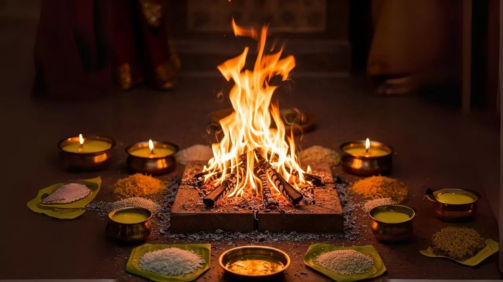

Mahamrityunjaya Jaap
A traditional Vedic chanting ritual performed with devotion and prescribed विधि.
View ServiceOUR SERVICES
Traditional Vedic puja and ritual services performed with devotion, proper विधि and श्रद्धा.
A traditional Vedic chanting ritual performed with devotion and prescribed विधि.
View Service
A sacred Shiva puja performed through traditional Vedic rituals and offerings.
View Service
Traditional puja performed according to Vedic ritual practices for Mangal Dosh.
View Service
A traditional ritual performed with श्रद्धा and Vedic विधि for Pitra-related observances.
View Service
A traditional Vedic puja performed according to established ritual practices.
View Service
Traditional Navgraha puja and ritual observances performed according to Vedic विधि.
View Service
Traditional Vedic rituals performed according to the nature of the dosh and required विधि.
View ServiceBEGIN YOUR PUJA JOURNEY
Connect with Pandit Dinesh Krishn Pradhan for traditional Vedic puja and ritual services in Ujjain and selected cities, or join online from anywhere in India.